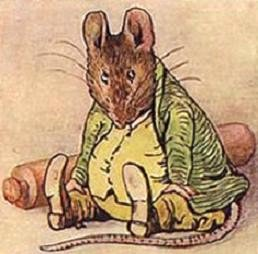
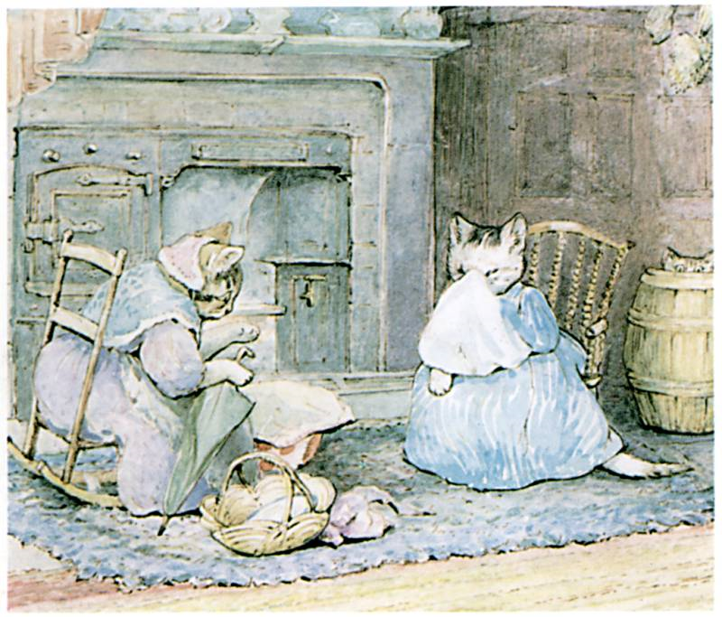
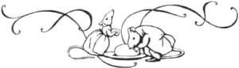
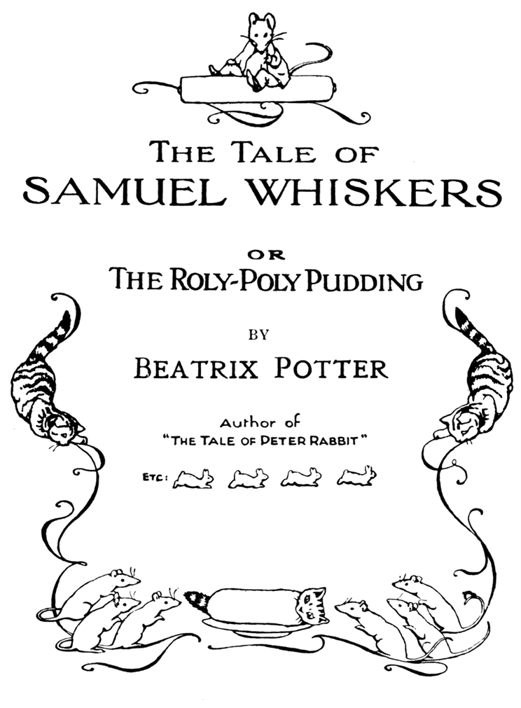

しいたげられ（ながらも） 手におえない
この生きものでも ひときわ かしこげな
赤い目が めだつ かわいい ちっちゃな
お友だちで たくみな ぬすっとでもある
〈サミー〉を しのんで
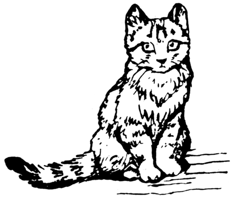この生きものでも ひときわ かしこげな
赤い目が めだつ かわいい ちっちゃな
お友だちで たくみな ぬすっとでもある
〈サミー〉を しのんで
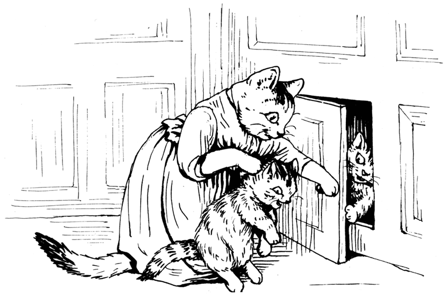
むかしむかし あるところに ぐいぐいタビサさん という はらはらしっぱなしの おかあさんネコが おりました。 いつも 子ネコたちが いなくなってしまって、 そのたび かならず いたずらを おこされてしまうのです！
パン作りの 日には、 みんな おし入れに とじこめてしまうのが お決まりでした。
モペットと ミトンズは つかまりましたが、 タムが まだ 見つかりません。
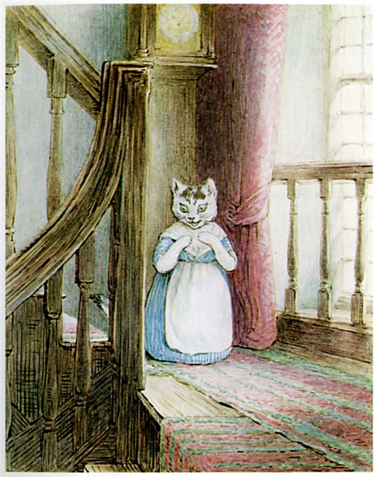
おかあさんの タビサは 家じゅうを 上に下にと みゃあみゃあ タムに よびかけながら 回りました。 かいだん下の なん戸を のぞいたり、 ちょうど 空き部屋に なっていた ほこりまみれの ねどこも さがしてみたり。 まっすぐ 上がって 屋根うらも 見たけれど、 どこにも 見当たりません。
古い むかしからの おうちで、 おし入れや かくし通路が いっぱい あるのです。 あつみ１メートルくらいの かべも あって、 なかでは いつも ごとごと へんな 物音、 まるで ちいさな かくし かいだんでも あるみたい。 かべ板の すきまに ぎざぎざ おかしな 入り口が あって、 夜な夜な ものが そこへ 消えていくのです ―― とくに チーズとか ベーコンとか。
おかあさんの タビサは だんだん そわそわしてきて とにかく みゃあみゃあ 声を 上げました。
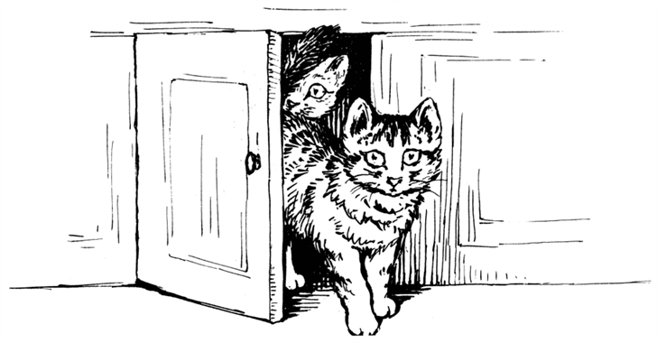
こうして 母ネコが 家じゅう さがし回っているうちに、 モペットと ミトンズが いたずらに 乗り出します。
おし入れの 戸には カギが ないので おしあけて 出て行きました。
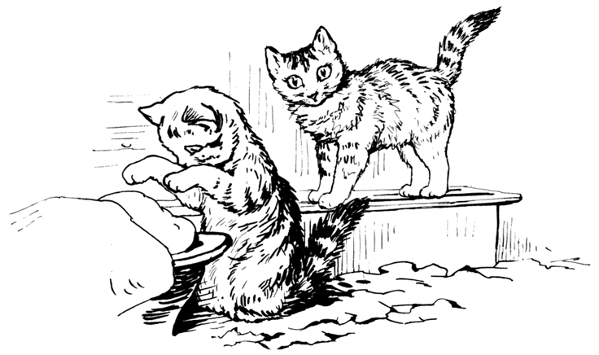
ふたりが まっすぐ 向かうのは かまど前の うつわで、 ふくらみ待ちの パンだねのところ。
ふたりは ちいさな 肉球で ぽんぽん ――「あたしたちで かわいい マフィンでも 作ろっか。」と ミトンズが モペットを さそいます。
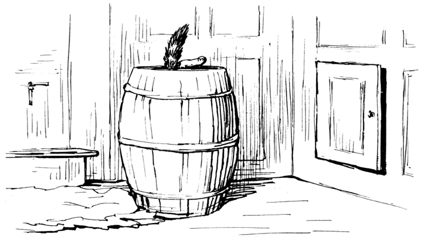
ところが ちょうど そのとき 戸口を たたく 音が して、 びくっとした モペットは 小麦粉の たるへ 飛び込んでしまいました。
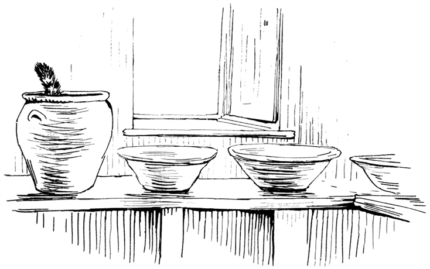
ミトンズも 牛乳おきばに かけこんで、 ミルク入れが ならんでいる 石だなにあった 空のつぼの なかに かくれます。
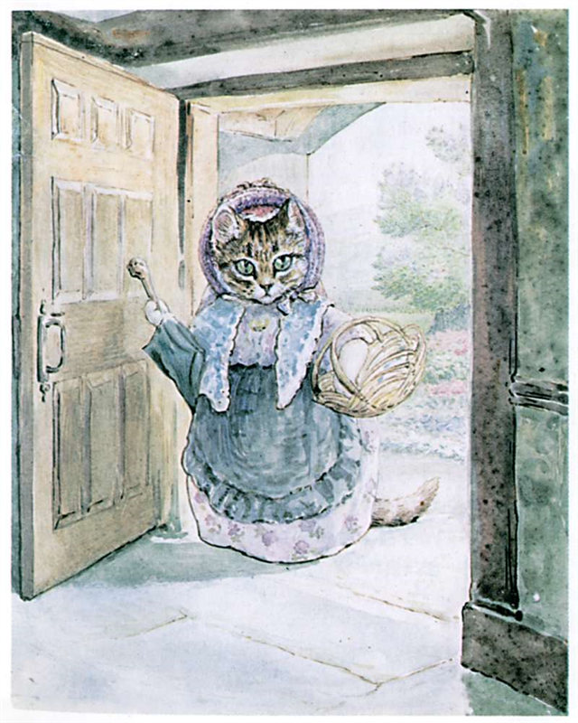
お客さんは おとなりさんで しんせきの リービさんで、 イーストを かりに 立ちよったのでした。
そのいとこの タビサは そわそわ みゃあみゃあと かいだんを 下りてきて ――「お入りください。 あら リービじゃない！ おかけなさいな。 ちょっと今 よわったことに なっててね、 リービ。」と なみだを こぼす タビサ。「むすこの ねこぬこタムが 見当たらないの。 ネズミに つかまったのかもしれなくて。」と エプロンで 目もとを ぬぐいます。
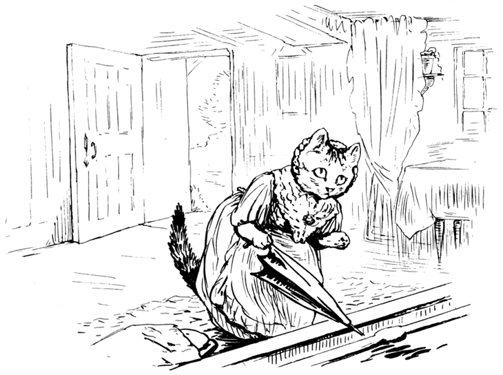
「あいかわらずの わるガキなのね。 前 お茶に 来たとき あの子 お気に入りの よそいきの ぼうしを ネコの ゆりかごに したのよ。 とりあえず どこを さがしたの？」
「うちじゅうよ！ イエネズミが やたらめったら わたしには むり。 もう、 聞き分けない 子どもたちなんだから。」と ぼやく ぐいぐいタビサさん。
「わたしなら ネズミも 平気、 あの子を さがしてあげる、 ひっぱたいて やるんだから！ まあ このかまどの かこい こんなに ススだらけ。」
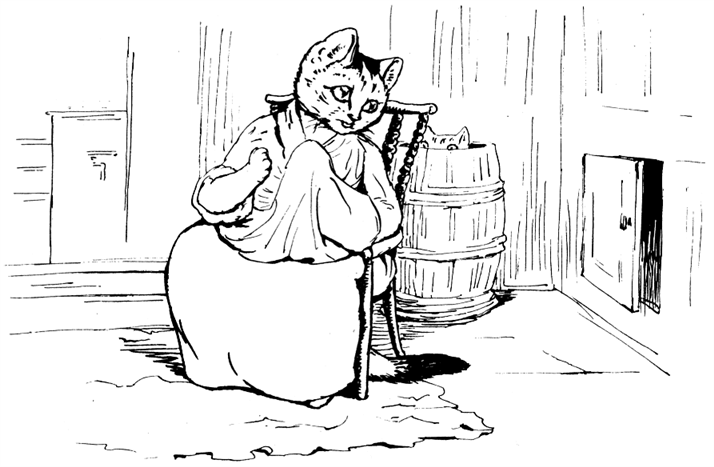
「えんとつ そうじ しなくちゃね ―― ああ、 ねえリービ ―― モペットと ミトンズも いなくなってるわ！」
「ふたりとも、 おし入れから 出たのね！」
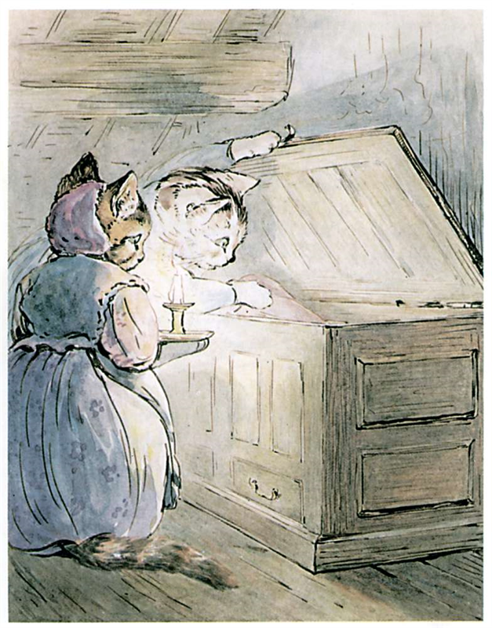
いとこ同士の リービと タビサは ふたたび おうちを しらみつぶしに さがしはじめて。 リービの かさで ベッドの下を つついたり、 おし入れを くまなく さぐったり。 はてには ロウソクを 手に、 屋根うらにまで 入って いしょう箱の なかまで のぞいたり。 何にも 見つからないのに 戸の ばたんという 物音 それから だれかの かいだんを かけ下りる 音が ひとたび 聞こえてくるのです。
「ほら、 イエネズミだらけ。」と おろおろする タビサ。「台所の 穴から ７ひき ちっちゃいのを つかまえて、 この間の 土曜に ごちそうに したの。 あと １度 見たのよ、 おじさんネズミを ―― ぶくぶくした おじさんネズミなの、 リービ。 わたし、 飛びかかろうとしたら 向こうは 黄ばんだ 歯を こっちに ひんむいて 穴に さっと にげこむんだから。」
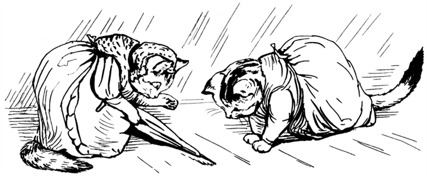
「ネズミって ほんとうに かんに さわるわ、 ねえリービ。」と タビサ。
リービと タビサは さがしに さがしました。 ふたりには、 屋根うらの ゆか下から 何かが ごろごろする 音が 聞こえるのですが、 やっぱり 何にも 見当たりません。
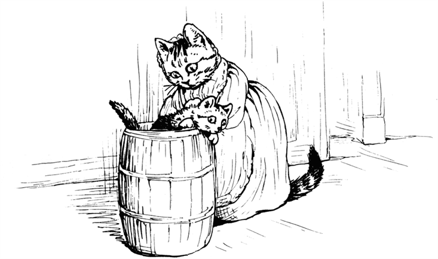
台所に もどる ふたり。「ほおら、 ここに まずは ひとり。」と リービは 小麦粉の たるから モペットを 引きずり出します。
ふたりして 子ネコから 小麦粉を はたき落とすと、 台所の ゆかへと 下ろしました。 子ネコは どうも おびえている ようす。
「ねえ！ おかあさん。」と モペット。「台所に おばさんネズミが いてね、 パンだねを すこし ぬすんでった！」
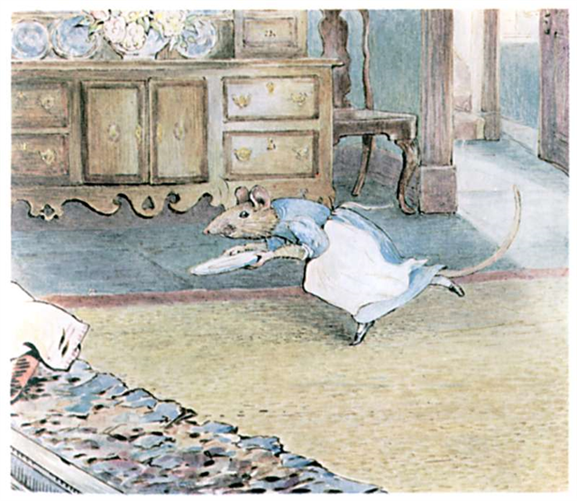
大人ふたりは あわてて パンだねの うつわを 見に行きました。 たしかに ちいさく ひっかいた あとが はっきり、 ひとかたまり パンだねを 持っていかれたのです！
「どっちへ 行ったの、 モペット？」
でも モペットは こわくて こわくて たるから １ども 顔を 上げられていなくて。
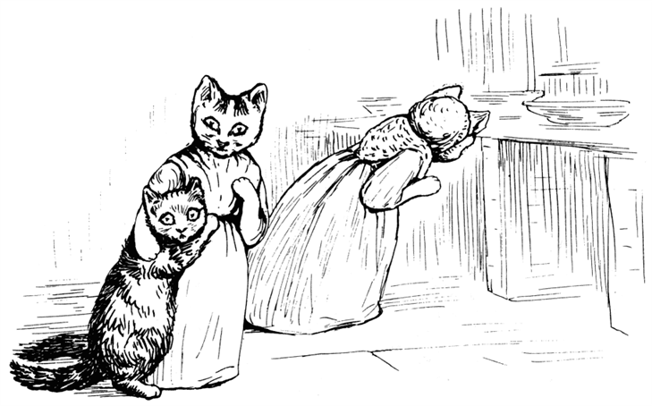
もう 見うしなっては いけないので リービと タビサは その子を 連れたまま まいごさがしを つづけることにしました。
みんなで 牛乳おきばへと 向かいます。
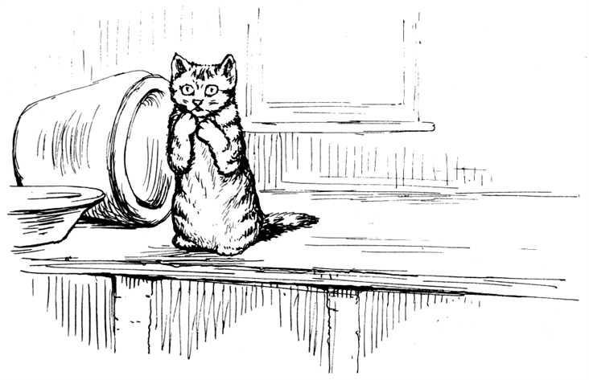
さっそく 見つかったのが ミトンズで、 空のつぼに かくれていました。
つぼを かたむけると その子が 転がり出てきます。
「ねえ、 おかあさん！」と 言い出す ミトンズ ――「ねえ、 おかあさん、 牛乳おきばに おじさんネズミが 来たよ ―― こわいくらいに でっかい ネズミでね、 おかあさん、 それで バターを ちょびっと のしぼうを かっぱらってった。」
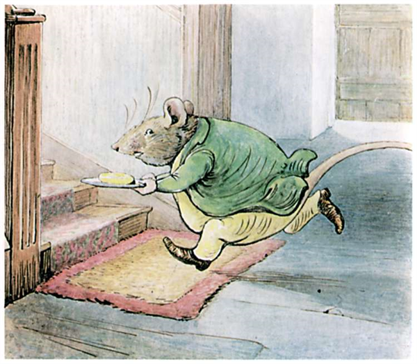
リービと タビサは たがいに 目を 合わせます。
「のしぼうと バター！ ああ かわいそうな タム！」と さけびながら 手を こまねく タビサ。
「のしぼう？」と リービ。「屋根うらで ごろごろ まきまきしてる 音 聞こえなかった？ あの箱 さがしてる ときよ！」
リービと タビサは もう１ど かいだんを かけ上がります。 なるほど たしかに 屋根うらの ゆか下から ごろごろ まきまきしている 物音が はっきりと。
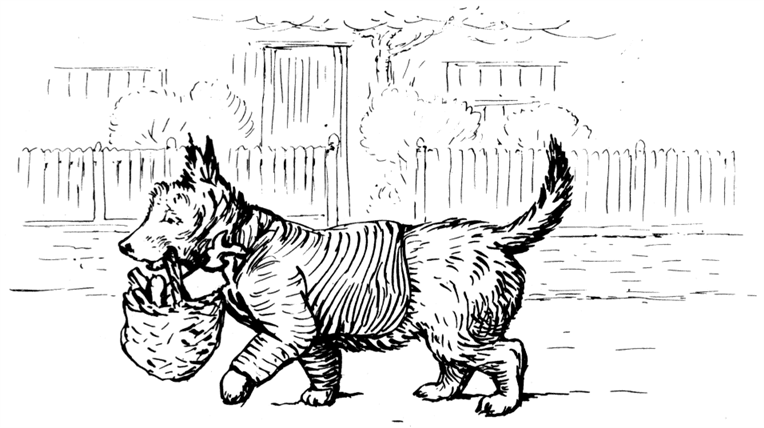
「たいへんよ、 タビサ。」と リービ。「のこぎりが いるから、 すぐに たてぐやジョンを よんでこないと。」

さて ここからは ねこぬこタムに おきた できごと。 いいですか、 古い おうちの えんとつに 上るのは たいへん ばかげたことなのです、 すぐに まいごに なるし でっかい ネズミが いるのですから。
ねこぬこタムは おし入れに とじこめられるのなんて ごめんでした。 母ネコが パンやきの したくに 入るのを 見て、 すがたを くらまそうと 心に 決めて。
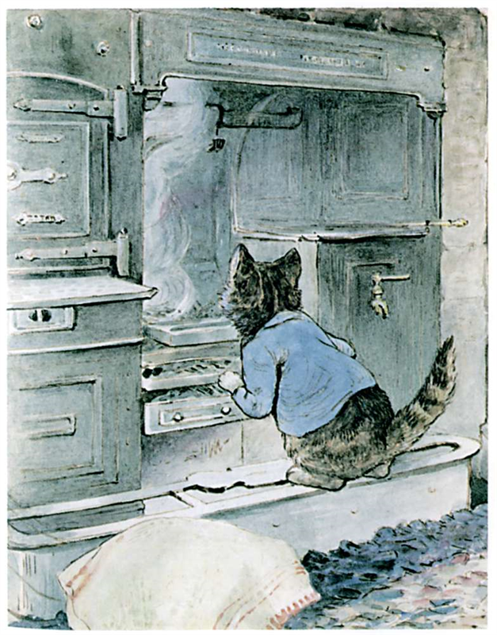
つごうの いいところをと 見回していると、 かまどの えんとつが 目に 入ります。
火は ついたばかりで まだ あつくはないのですが、 まきから むせる 白い けむりが 出ていました。 ねこぬこタムは かこいに のぼって 上を のぞいてみます。 大きな 旧式の かまどでした。
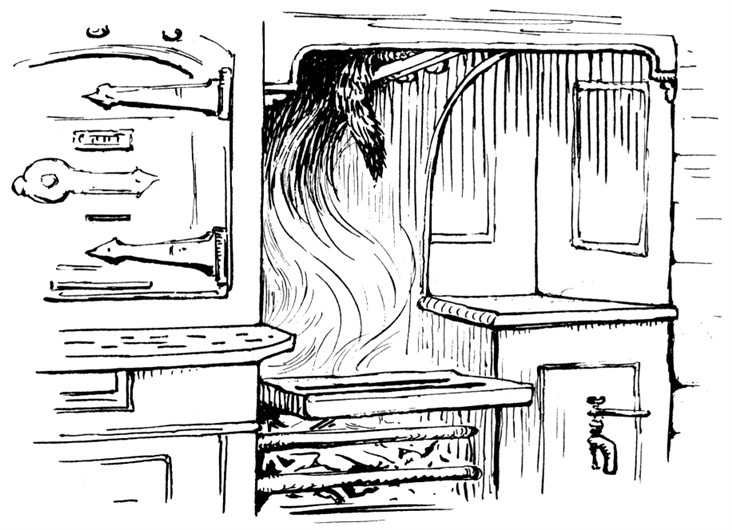
えんとつ そのものは ひとひとり 立って すすめるくらいの 広さが あります。 だから 子ネコの タムちゃんなら ゆうゆう だいじょうぶ。
まっすぐ かまどへと 飛び上がって、 やかんかけの 鉄のぼうの ところに 手足を かけて。
ねこぬこタムは そのぼうから また 大きく ぴょん、 えんとつ内の 高いところに ある でっぱりへ ちゃくち、 かこいに ススを ちょっくら はたきおとします。
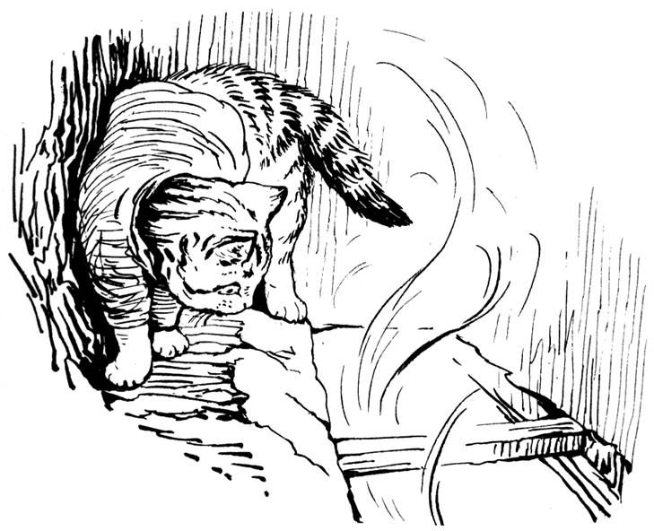
けむりに けほけほ せきこむ ねこぬこタム。 なんと 下の かまどの まきが ぱちぱち、 もえだしたのが 聞こえてきます。 かくごを 決めて まっすぐ てっぺんまで 上って おおいの 外へ 出て スズメを つかまえようと 考えました。
「ひきかえすのは むり。 すべったら かまどに おっこちて、 ぼくの きれいな しっぽと この青い うわぎが こげちゃうよ。」
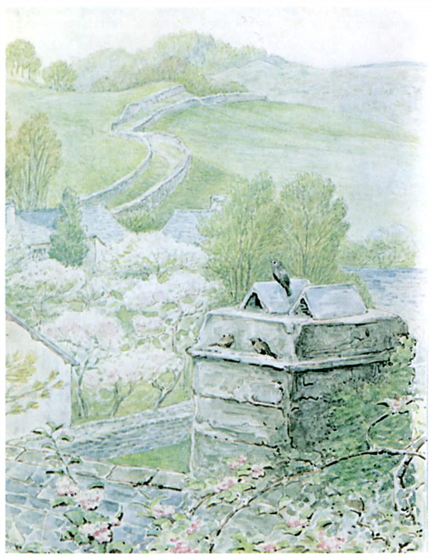
えんとつは とても 大きくて、 むかしながらの ものでした。 だんろに 太い まきを くべていた 時代に 作られた しろものです。
えんとつの くだは 屋根の上に 石のタワー よろしく つきでていて、 日ざしが 上から下へと きらきら てりかえし、 雨を ふせぐ 山がたの おおいのなかに さしこんでいて。
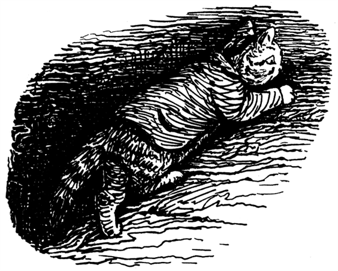
おっかな びっくりの ねこぬこタム！ のぼって、 どんどん どんどん 上へ。
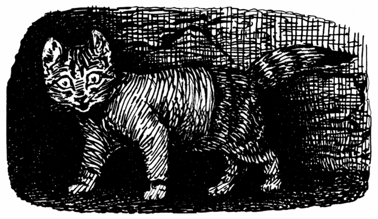
さらに ススまみれに なりながら なんとか 横道を すすみます。 まるで 自分が ちいさな ほうきにでも なったみたい。
まっくらで 何がなんだか わかりません。 くだから くだへと 次々と つながっているらしく。
けむりは 少なくなりましたが 自分が どこに いるのか わからなくなる ねこぬこタム。
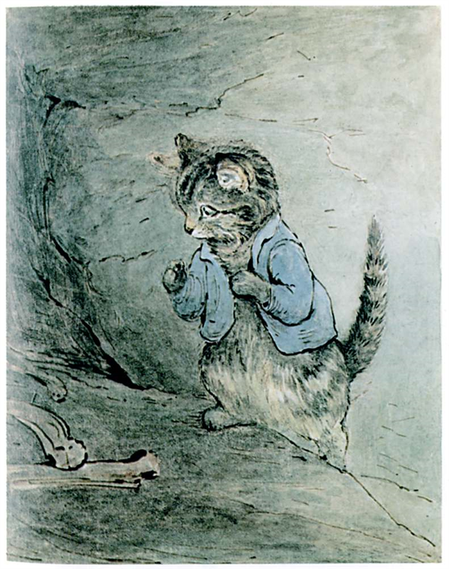
上へ 上へと よじのぼったものの、 えんとつの てっぺんに たどりつくでもなく 岩かべの いきどまり。 ところが 何ものかに 少し ずらされていて、 その前には ひつじの 肉のほねが ちらばっていて ――
「おかしいな。」と ねこぬこタム。「だれが こんな えんとつのなかで 骨を しゃぶるんだろ？ 来るんじゃなかった！ ん、 すごく おかしな においが！ ネズミみたいな ―― ひどく きついっ。 くしゃみ 出そう。」と ねこぬこタム。
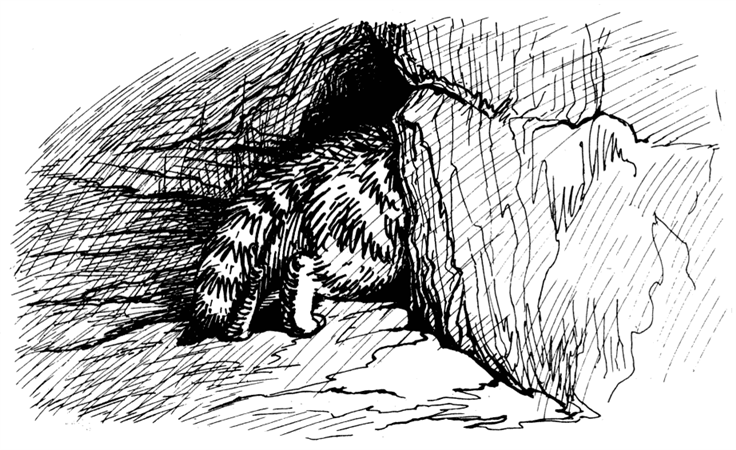
石かべの すきまに からだを むりくり おしこんで、 きゅうくつで せまいのに ろくに 明かりも ないような すじを もぞもぞ すすんでいきます。
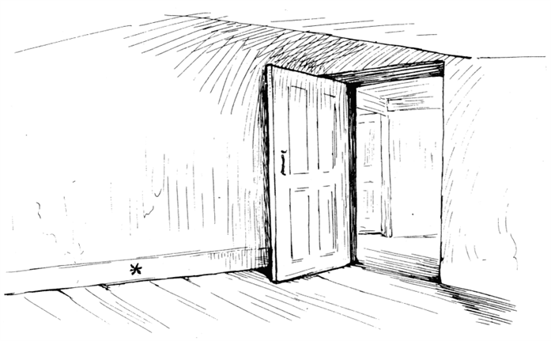
数メートルほど 気をつけて さぐりさぐり 先を 行くのですが、 このとき いたのは じつは 屋根うら部屋の すそ板の うらがわあたり。（絵の ＊じるしの ところ。）
すると まっくらがりで いきなり まっさかさまに 穴へ おっこちて、 ばっちい ぬのきれの 山へ どすん。
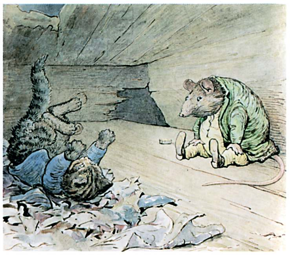
おき上がった ねこぬこタムが あたりを 見回すと ―― 気づけば いたのは 見たことも ないところ、 ずっと このおうちで くらしてきたと いうのに。
そこは せまくるしく かびくさく いきづまる 部屋で、 板や たる木が むきだし クモのす しっくいなんかが あちこちに。
そして まっ正面に ―― むこうの すみに ―― いたのが 大きな イエネズミ。
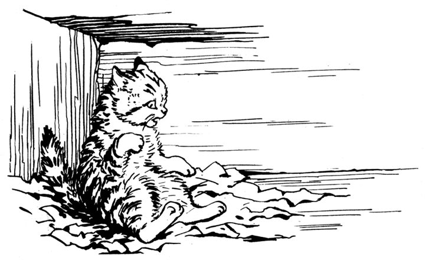
「どういう つもりだ、 おれの ねどこに ススまみれで おっこちてきやがって。」と 歯を かちかち いわせる イエネズミ。
「その、 えんとつの お手入れが されてなくて。」と 言いわけする かわいそうな ねこぬこタム。
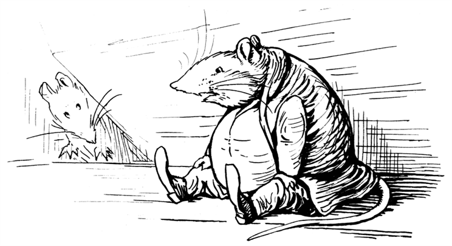
「アナ＝マライア！ アナ＝マライア！」と ちゅうちゅう イエネズミ。 ぱたぱた 足音のあと おばさんネズミが たる木の すきまから 顔を つきだしてきます。
さささっと ねこぬこタムに かけよって 何が何だか わからないうちに ――
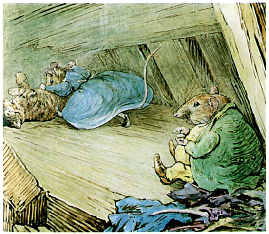
みぐるみ はがされ まるめられて、 ひもで ぎゅうぎゅう ぐるぐるまきに しばられて。
しばっているのが アナ＝マライア。 おじさんネズミは たばこを かぎながら それを 見まもっているだけ。 しばりおわると ２ひきは すわって 口を 大きく あけながら じっと にらんでくるのです。
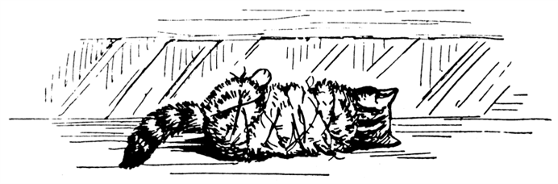
「アナ＝マライア、」と 声を かける おじさんネズミ（お名前は ちょびひげサミュエル）――「アナ＝マライア、 ごちそうとして ネコを まるごと ねりこんだ まきまきパンを 作っておくれ。」
「パンだねと バター少々 それに のしぼうが いるさね。」と 首を かしげながら アナ＝マライアは ねこぬこタムを どうしてやろうかと ひとしあん。
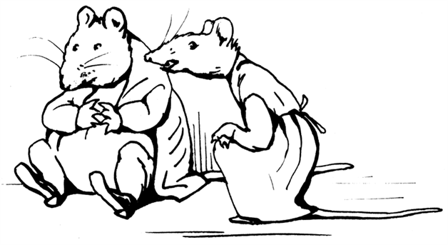
「うんにゃ。」と ちょびひげサミュエル、「ちゃんと 作るにゃ パン粉もな。」
「バカらし！ バターと パンだねで じゅうぶん。」と かえす アナ＝マライア。
２ひきの ネズミは 数分間 話し合いを してから 動き出しました。
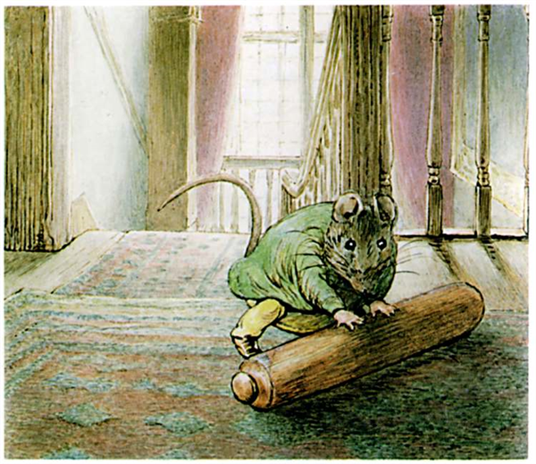
ちょびひげサミュエルは かべ板の すきまを ぬけて、 あろうことか 正面かいだんを 下りて 牛乳おきばまで バターを 取ってきます。 だれにも 合わずに。
そして のしぼうを 取りに もう１ど。 手で 前へ ごろごろと、 ビールしょく人が たるを ころがすように 運ぶのです。
このネズミにも リービや タビサの おしゃべりが 耳に 入りましたが、 ふたりは ロウソク片手に いしょう箱を 見るので いっぱいいっぱい。
はち合わせも なし。
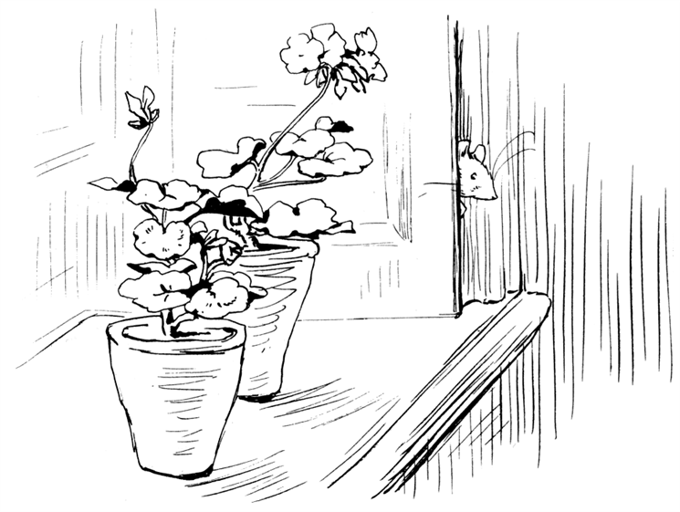
すそ板や よろい戸を 通って 下へ おりた アナ＝マライアは パンだねを くすねます。
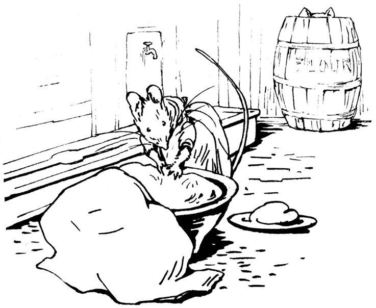
小皿を はいしゃくして ちいさな 手で パンだねを すくいました。
モペットのことには 気づかずに。
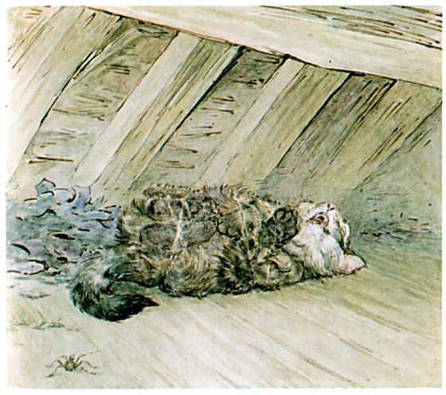
屋根うら部屋の ゆか下に 転がされたままの ねこぬこタムは のたうちながら みゃあみゃあ 助けを よぼうとしました。
けれども 口は ススと クモのすに まみれて、 きつく しばられても いるので、 だれにも 声は とどきません。
と思いきや クモが 天井の さけめから 出てきて 高見の 見物、 むすび目を ねぶみするように たしかめます。
そのクモも あわれ アオバエを 日々 しばってましたから かなり もつれからんでいると わかりました。 助けの手を さしだすことは ありません。
ねこぬこタムは みを よじって なきわめいたものの、 とうとう くたびれはててしまいます。
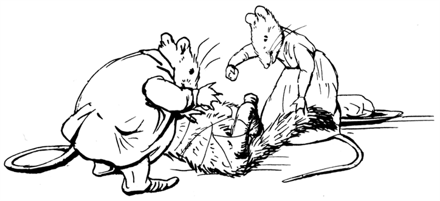
まもなく ひきかえしてくる ネズミたち、 ネコを ねりこみに かかりました。 まず バターを ぬりつけ、 それから パンだねを まきつけます。
「ひもは おなかで こなれんのじゃないか、 アナ＝マライア？」と たずねる ちょびひげサミュエル。
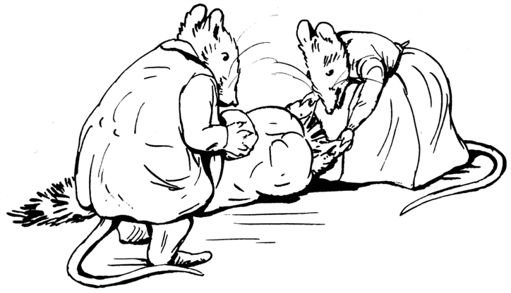
アナ＝マライアは そんなの 大したこと ないと あしらって 生地が くずれては こまると ねこぬこタムの 頭を おさえに かかりました。 両耳を ひっつかみます。
ねこぬこタムは かみつき、 つばを はき、 わめいて もがきました。 そこへ のしぼうで まきまき ねこまき ねこねりまき。 ネズミたちは それぞれ 両はしを つかみつつ。
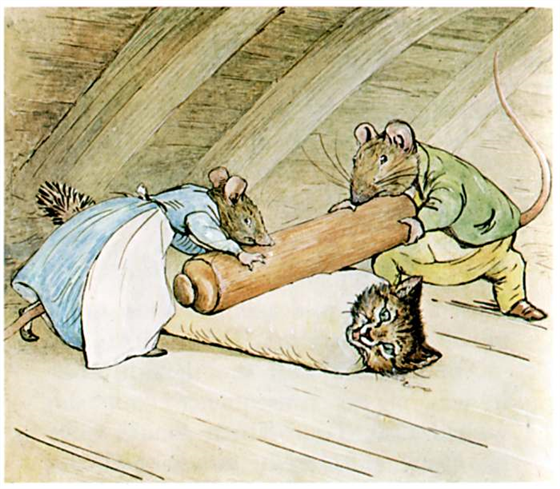
「しっぽが はみ出とるな！ これじゃ パンだねが 足りんぞ、 アナ＝マライア。」
「持てるだけ 取ってきたのよ。」と かえす アナ＝マライア。
「これじゃあ、」―― じっと ねこぬこタムを 見すえる ちょびひげサミュエル ――「おいしい パンは できんぞ。 ススくさくて たまらん。」
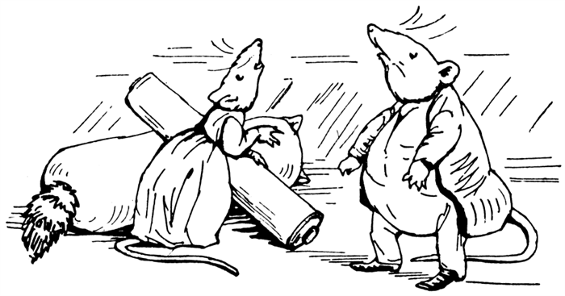
その言いぐさに アナ＝マライアが くいかかろうとした そのとき、 だしぬけに 頭上から べつの 物音が 聞こえてきます ―― のこぎりの ごりごりという 音で それから ひっかきながら わんわん ほえる 子犬の 声も！
ネズミたちは のしぼうを とりおとして 耳を そばだてます。
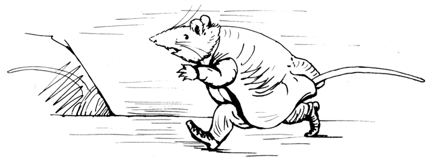
「見つかったんじゃあ、 こっちへ 来るぞ、 アナ＝マライア。 うちらの にもつを まとめて ―― よその ものもだ ―― そんで すぐに 出て行くんじゃあ。」
「それじゃ このパン おきっぱなしに なっちゃうじゃない。」
「だが ひもで おなか こわすのは ごめんじゃからな、 おしきろうとしても むだじゃあ。」
「とっとと 来て かけぶとんの 上の 羊のほね まとめるの 手を かしなさいな。」と アナ＝マライア。「えんとつに かくしてた くんせいハム 半分も 取ってこないと。」
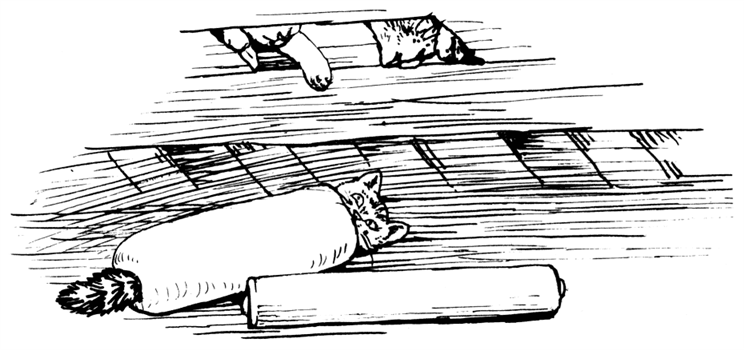
こういうわけで たてぐやジョンが 板を 外したときには あいにく ―― ゆか下は もぬけのから、 ただ のしぼうと まきまきされて ススだらけの ねこぬこタムだけが あったという しだい。
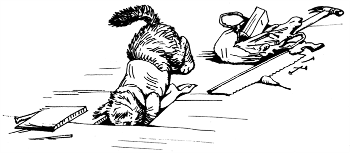
とはいえ ネズミの のこりがも きつくて、 たてぐやジョンは 午前のうち ずっと くんくん わんわん しっぱなし、 しっぽを ふりふり ねじきりのように 頭を 中心に ぐるぐる。
そのあと ふたたび 板を 打ち直して、 道具を かばんに つめこみ、 かいだんを 下りてきました。
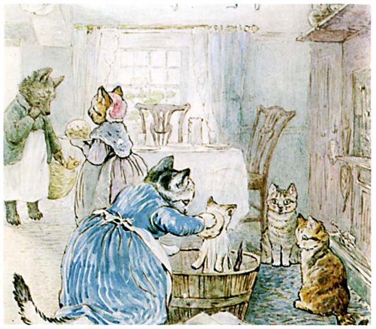
ネコの 家族も まったく もとどおり。 みんなして 犬さんを ごちそうに おさそいします。
まかれた 生地を ねこぬこタムから ひっぺがして、 小分けして かしパンに してあったのですが、 ススよごれを ごまかすための ほしブドウ入りでした。
さらには ねこぬこタムを おふろに 入れて バターを ぬぐわないと いけなくて。
パンのにおいに たてぐやジョンの おはなも ひくひくしましたが、 ざんねんながら ごちそうを およばれする ひまが なくって。 というのも ポッターさんの にぐるまを 作りおえたばかりなのに、 さらに 鳥かご ２つを 注文されてしまったのです。
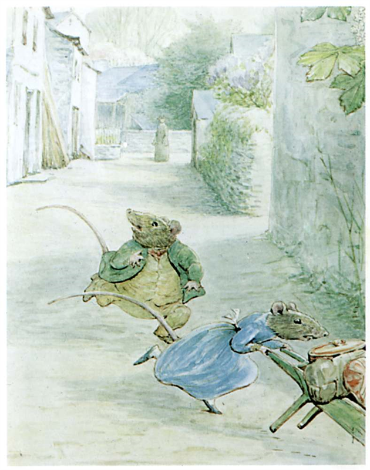
さあて わたしが 午後おそく ポストのところへ 出かけた おりのこと ―― 角から 小道を のぞきこむと、 ちょびひげサミュエルと おくさんが かけてゆくのが 目に 入りましてね、 ちいさな にぐるまに めいっぱい にもつを つんでいたのですけれども、 あの にぐるま もしかして わたしのじゃないかしら。
ちょびひげサミュエルは ぜえはあ いきぎれ、 アナ＝マライアは ずっと きいきい わめいていました。
どうも おくさんに 土地かんが あるらしく、 にもつも たっぷり あるようです。
わたしの にぐるまを かりても いいなんて 言ったおぼえは ちっとも ないんですけど！
２ひきは なやに 入ると つなを 使って にもつを ほし草の 山の上へと 引き上げました。
そのあと ぐいぐいタビサのところへは しばらく ネズミは あらわれないのでした。
かわりに 住みつかれた のらっこポテトーズさんのほうは、 もう おかしくなりそうで。 なやには ネズミ、 ネズミ、 ここにも 大きな イエネズミ！ ニワトリの えさを 食いつくすわ、 カラスムギや ふすまを くすねるわ、 エサぶくろに 穴を あけまくるわで。
それに こいつらみんな ちょびひげサミュエルの ししそんそん ―― 子どもに まごに ひまごまで。
もう きりが ありません！
大人になった モペットと ミトンズは ネズミとりの たくみと なりました。
村を 回って ネズミとりを すると 言えば 引き合いが たくさん 見つかりまして。 けっこう たくさん うけおいますから ゆうゆう くらせるくらいには かぜげました。
なやの戸に ずらりと ネズミの しっぽを つりさげて、 つまかえた 数を 示します ―― それこそ 何十 何十と。
でも ねこぬこタムは いつまで たっても イエネズミに びっくびく、 自分から 顔を 合わせるとしても ずいぶん ちいさな ――
ハツカネズミだけでした。
（おしまい）